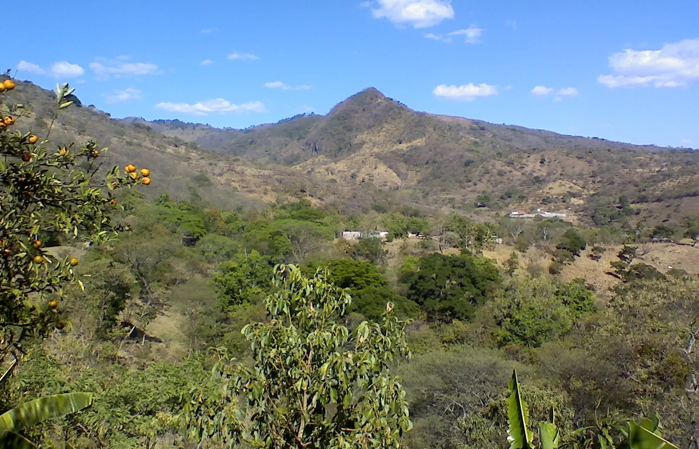
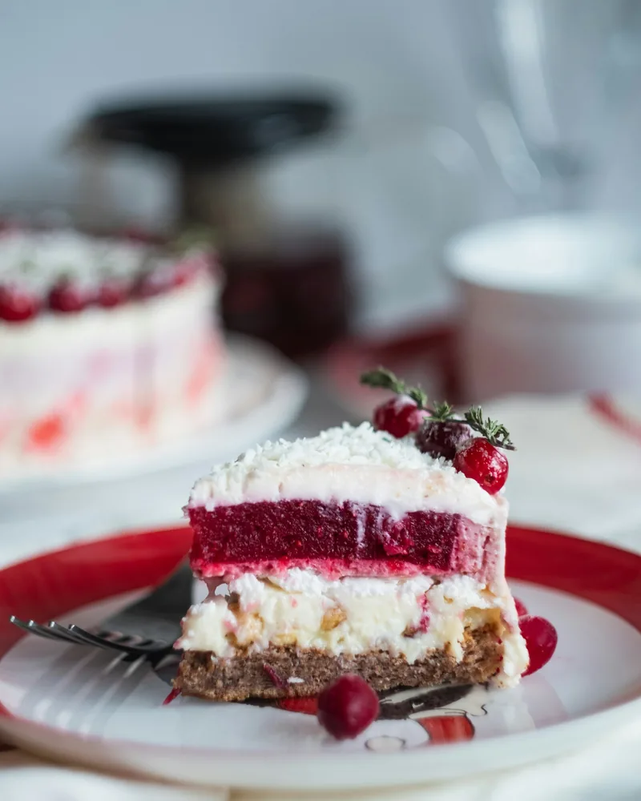
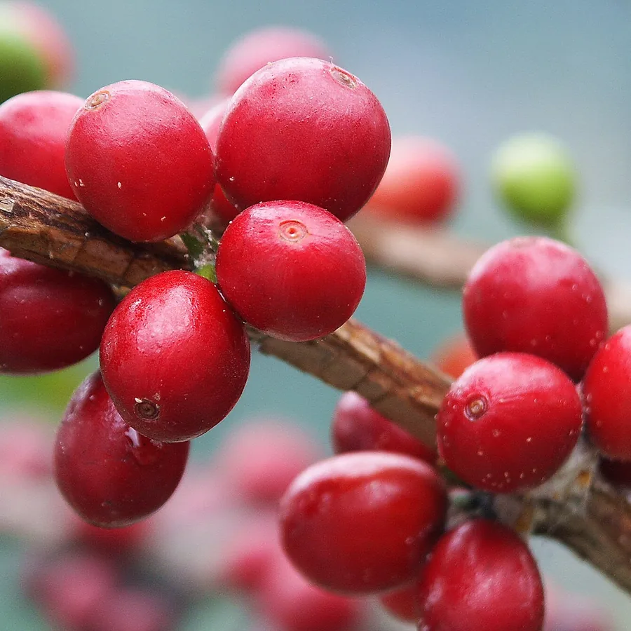
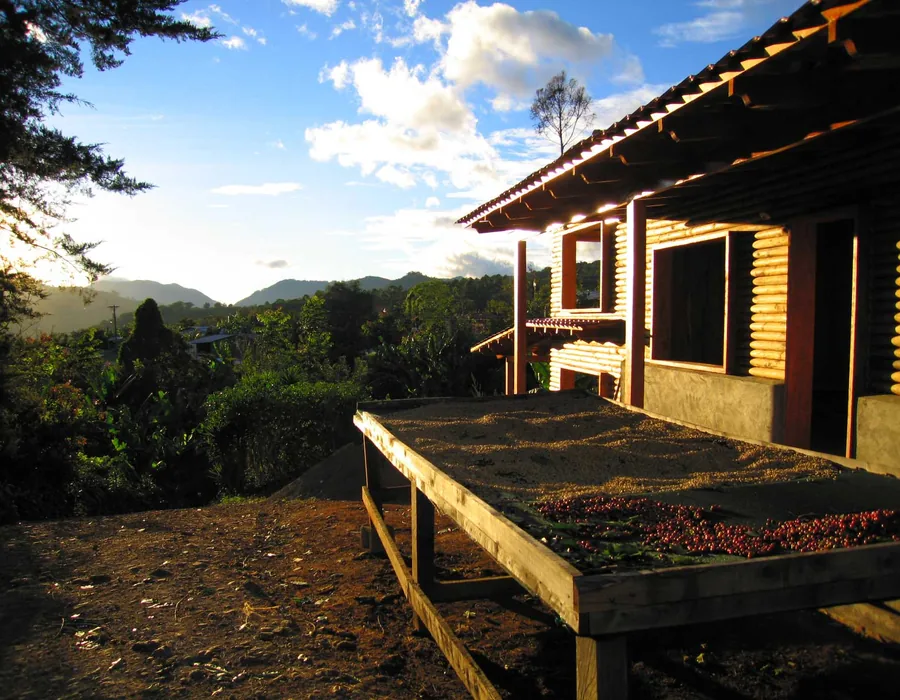

Café de montaña
Aroma
de Montaña
Chalatenango, El Salvador
A small mountain coffee shop on Avenida Delgado. Coffee from the hills of Chalatenango, cake from the counter, a smoothie when the afternoon gets warm, and tables outside.

On the counter
What we serve. Today’s cakes and snacks are written up by the till.
| Item | How it comes |
|---|---|
| Coffee | Hot, black or with milk. Mountain coffee, brewed to order. |
| Cakes and bakes | Slices and pastries from the counter. |
| Smoothies and frozen drinks | Blended cold, for warm afternoons. |
| Snacks | Burgers and Mexican-style plates when you need more than cake. |

From the hills to your cup
Chalatenango is cool, green mountain country, and coffee grows on its hills. This is how a bean gets from there to you.
-

Picked ripe
Coffee grows as a cherry that turns red when it’s ripe. The bean is the seed inside.
-

Dried in the sun
After picking, the beans are dried, often on raised beds in the open air, before roasting.
-
Brewed at our counter
Roasted, ground, and finally brewed to order here on Avenida Delgado.
Find us
Avenida DelgadoChalatenango, El Salvador
Tables outside. For today’s hours, message us on Facebook or call.